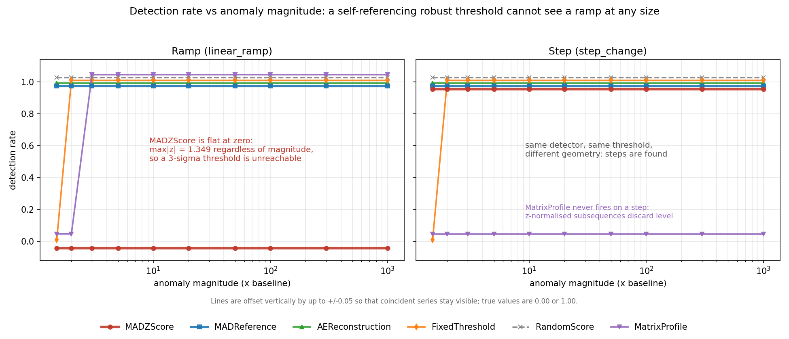

Your anomaly detector can't see slow failures, at any size
Here is an anomaly detector you have probably written, or at least reviewed:
med = np.median(x)
mad = 1.4826 * np.median(np.abs(x - med))
z = np.abs(x - med) / mad
alert = z > 3It is a robust z-score. Median instead of mean, median absolute deviation (MAD)
instead of standard deviation, so a few outliers can't wreck the baseline. The 1.4826
makes the MAD comparable to a standard deviation, so z > 3 reads as
"three sigma." It is in a lot of monitoring code, and for spikes, steps and dropouts it
works well.
Now give it a signal that rises steadily: a bearing wearing out, a filter clogging, a seal leaking a little more each day. Make the rise 2×. Make it 1000×. This detector will never fire. Not late, not with low sensitivity. Never, at any magnitude.
The four-line proof
Take a linear ramp with range R. Its values are spread uniformly across an interval of width R.
- The median is the midpoint, so deviations from it are uniform on
[−R/2, +R/2]. - The absolute deviations are uniform on
[0, R/2], so their median, the MAD, isR/4. Scaled:1.4826 × R/4 = 0.37065·R. - The biggest deviation is at either end:
0.5·R. - So the biggest z-score the rule can ever produce is
0.5·R / 0.37065·R = 1.349.
R cancels. A bigger fault stretches the deviation being scored and the scale it's divided by by exactly the same factor. The ceiling is 1.349 no matter how large the ramp gets, and your threshold is 3.
The numbers
I built a small evaluation harness, tsad-harness, that generates signals with known ground truth and runs detectors against them. On noiseless ramps:
| ramp size | max |z| measured | predicted | fires at 3σ? |
|---|---|---|---|
| 2× | 1.348981518953 | 1.348981518953 | no |
| 10× | 1.348981518953 | 1.348981518953 | no |
| 100× | 1.348981518953 | 1.348981518953 | no |
| 1000× | 1.348981518953 | 1.348981518953 | no |
The residual is exactly zero, not merely small. With noise added, the detection rate is 0.00 at all ten magnitudes tested, from 1.5× to 1000×.

When it holds, and when it doesn't
Two honest limits, because a result without its boundaries is marketing:
- It needs the ramp to fill most of the window. If some flat healthy data sits in front of the ramp, the ceiling stays at exactly 1.349 until that flat part is a quarter of the window, then it starts to rise. For robust statistics people usually quote a breakdown point of 1/2; against a ramp it's effectively 1/4. A trailing window over a machine that has been degrading throughout is exactly the bad case.
- It's about uniform values, not about slowness. An exponential ramp is detected from about 10× upward, because its values bunch near the bottom and drag the median down. My first draft of this claim was "robust z-scores can't see slow change." That's wrong, and the harness is what caught it. The correct claim is narrower: a linear ramp is the worst case, and it's also the shape most often used to model steady wear.
The fix, and what it costs
The bug isn't robustness. It's that the rule computes its median and MAD from the same data it's scoring, so it has no fixed idea of "normal." It just asks whether each point is unusual relative to its own series.
Compute the median and MAD once, over a declared healthy reference window, and freeze them. Same formula, same threshold of 3. The detection rate on linear ramps goes from 0.00 to 1.00 at every magnitude.
It isn't free. On a healthy machine that switches between two normal operating modes, the frozen-reference version flags 50% of points, because the second mode falls outside the reference. The self-referencing version flags none, for the same reason it misses ramps: it adapts to whatever it's shown. You're choosing which mistake you'd rather make, and you can't choose well without measuring both.
Why this is worth ten minutes of your time
A system built on the self-referencing rule looks healthy. It catches spikes and steps, keeps a low false-positive rate, and stays quiet. On a dashboard, its silence about gradual wear is indistinguishable from there being no wear.
That fits a broader argument from Wu and Keogh (arXiv:2009.13807): time-series anomaly benchmarks are flawed in ways that create an illusion of progress. Their case centers on bad labels and inflated metrics. This is a different kind of example. The labels are fine and the metric is fine; the detector just can't do it, and no benchmark made of steps and spikes will ever show you that.
If your evaluation set doesn't contain the geometry that breaks your detector, your evaluation can't find the break. Build test signals with known ground truth, include a slow ramp, and keep a random-score baseline and a no-anomaly series in every results table.